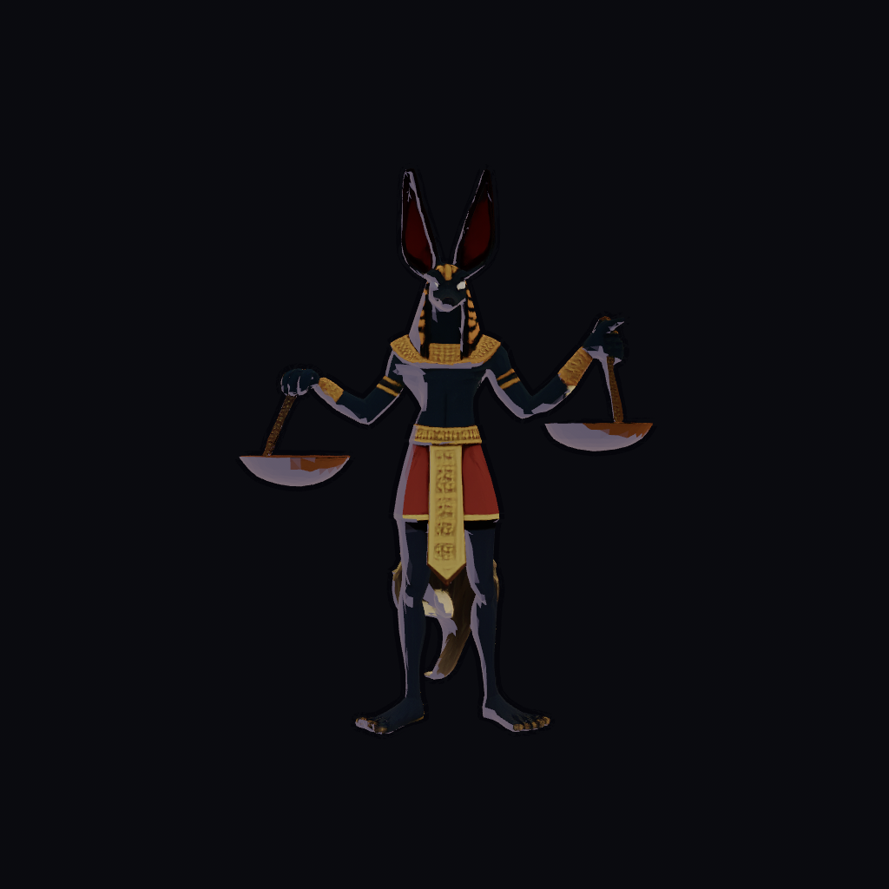
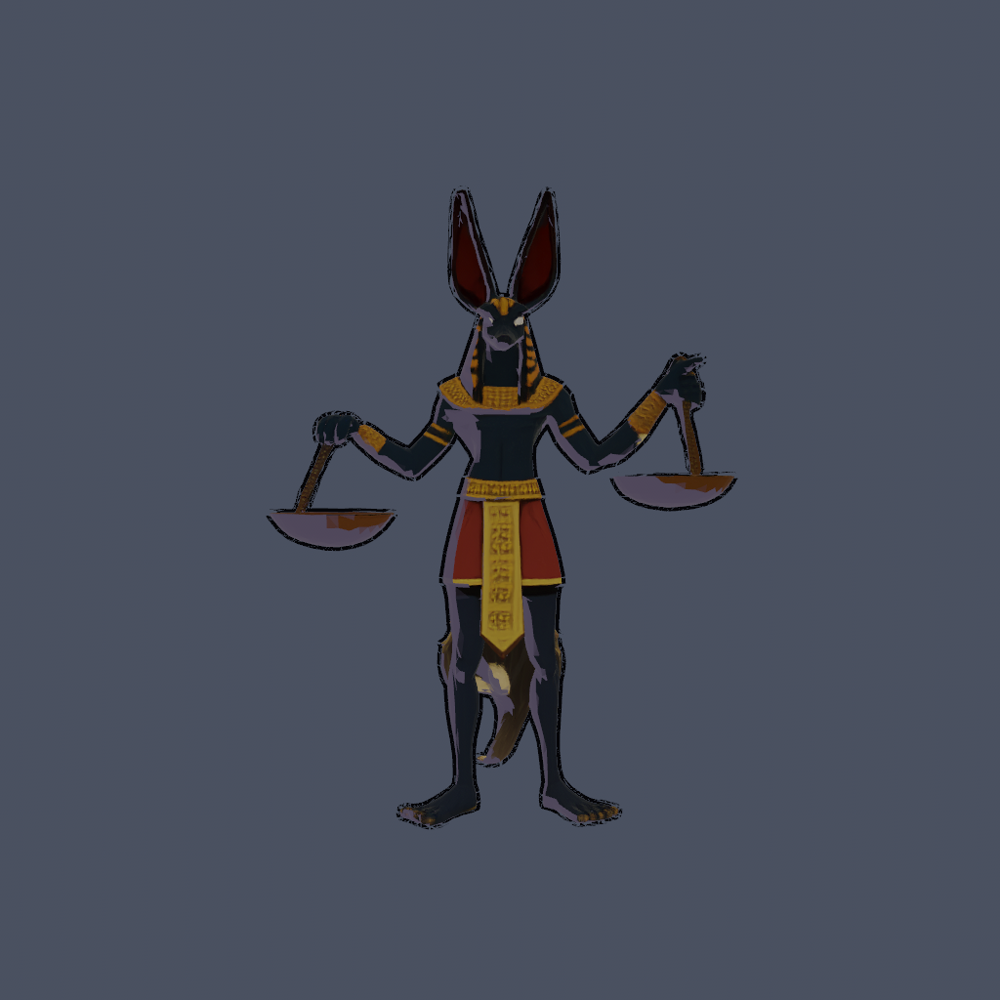
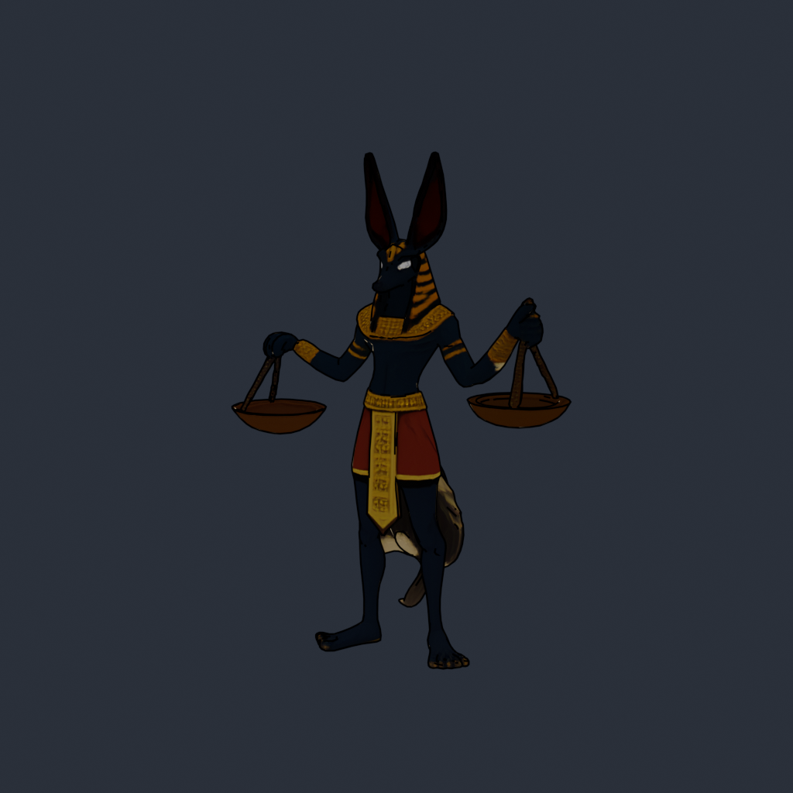
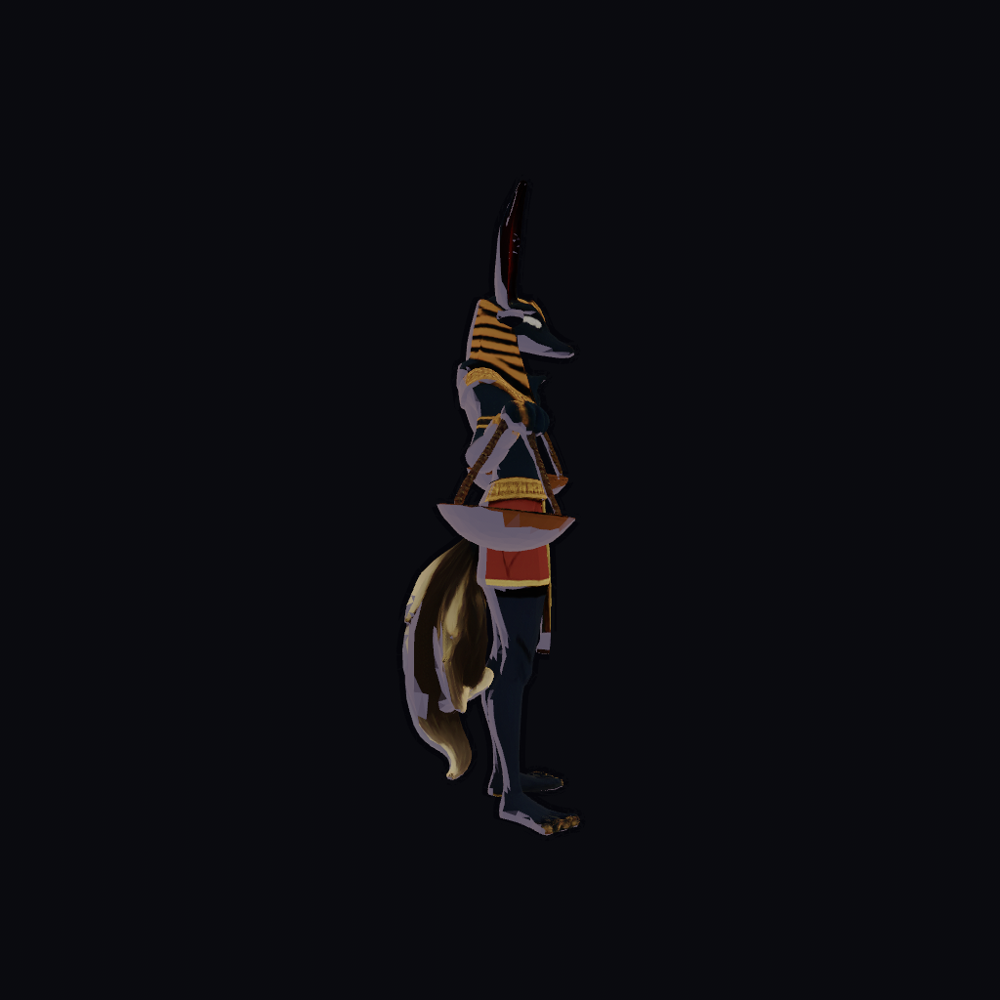
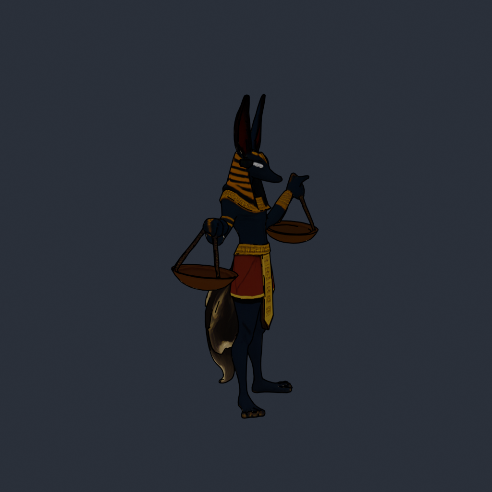
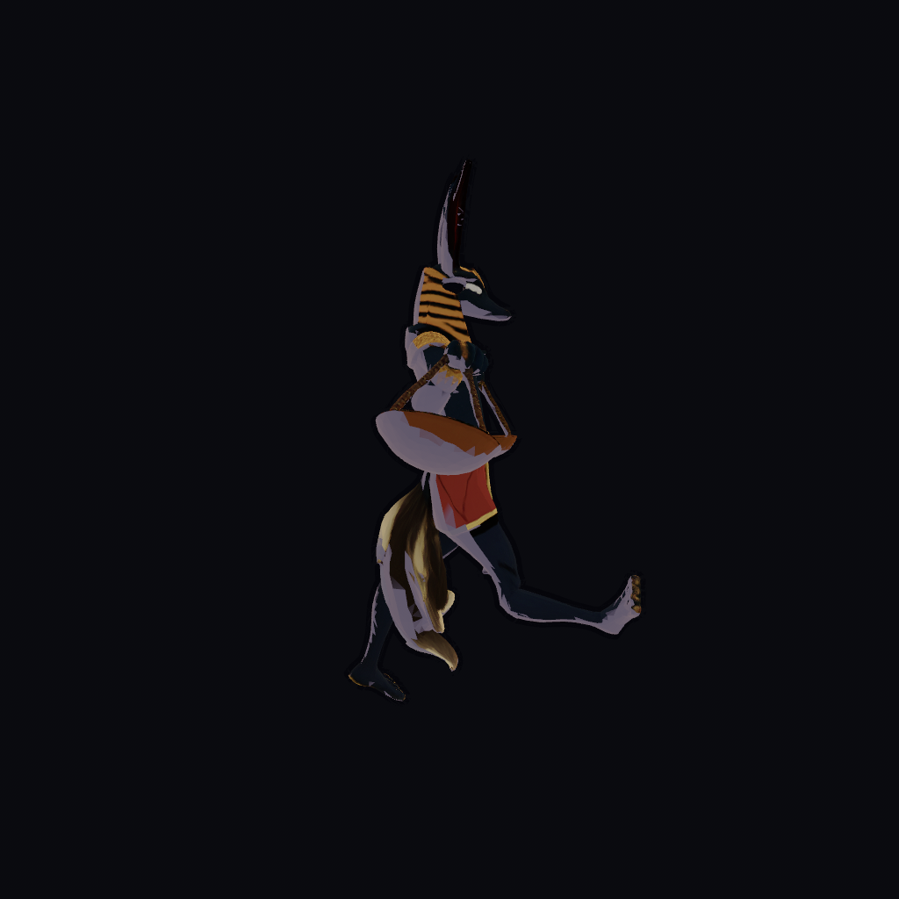

OLD in-enginesoft, near-black stage

Goal: replace the soft in-engine outline (which read as a bloom rim-light) with a true inked,
constant-width, high-contrast silhouette matching the EEVEE-proxy flat-cel + Freestyle-ink look.
All frames rendered fully headless on Metal (no window, no screencapture) via
render-to-Image → Screenshot::image → save_to_disk.









0.02,0.02,0.04)
but the stage was near-black too (ClearColor 0.075,0.078,0.094), so the silhouette
line had almost zero contrast against the background and effectively vanished.Bloom::OLD_SCHOOL at full strength bloomed the
bright parametric fresnel rim (rim_color 1.0,0.82,0.5, mix 1.0) into a fuzzy
white halo hugging the silhouette — that glow, not the ink, was what the eye picked up as an "outline".bevy_mod_outline (EXTRUDE_VERTEX), not a hand-rolled hullClearColor 0.30,0.33,0.40 — the dark ink now
reads with high contrast, exactly like the proxy's slate background.OutlineVolume { width: 4.0,
colour: 0.02,0.02,0.03 }. Because bevy_mod_outline's EXTRUDE_VERTEX pass is
a normal-extruded dark shell (the standard inverted-hull toon-ink technique), tuning it was enough —
no separate hull pass was needed.0.15 → 0.025, so the HDR pipeline stays but the
glow no longer masquerades as a line.rim_color 0.34,0.33,0.28,
fresnel_power 6.0, mix 0.4) — retains the mtoon rim per spec without blooming
into a white halo.AgX → Reinhard to preserve the saturated cel flats
(red kilt / gold / navy) instead of filmic desaturation.shading_toony 0.97) is unchanged.Silhouette ink: yes — matched. The outer contour is now a crisp, constant-width, high-contrast dark ink line on a neutral stage from every turntable angle. Side-by-side it reads as the same inked-cel language as the EEVEE proxy, and the old bloom-rim artifact is gone. The flat saturated cel fills also now line up with the proxy's palette.
Where it still falls short: the proxy's interior Freestyle
lines — eye/brow slits, muzzle contour, anatomical/muscle creases, kilt fold lines — are not
reproduced. bevy_mod_outline inks the silhouette (and creased edges) only; interior detail
in-engine comes from cel banding + texture, not ink. So the character reads as inked at the outline but
is smoother/less line-detailed inside the silhouette than the proxy. Additionally, the extruded ink can
look slightly thick/uneven at hard mesh seams (ears, scale-pan rims) versus Freestyle's perfectly even
stroke. Closing the interior-line gap would need a second pass (depth/normal edge-detection post-process
or baked ink texture), which was out of scope here.